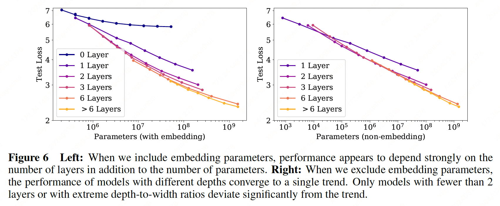
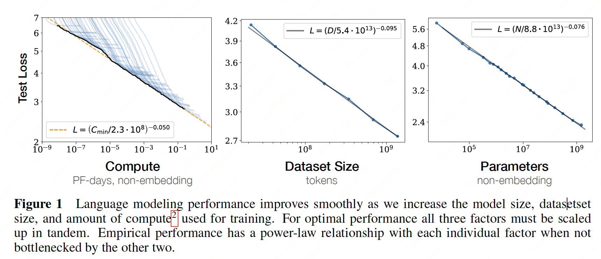

Scaling Laws for Neural Language Models#
Note
We study empirical scaling laws for language model performance on the cross-entropy loss. The loss scales as a power-law with model size, dataset size, and the amount of compute used for training.
Parameter and Compute Scaling of Transformers#
We parameterize the Transformer architecture using hyperparameters \(n_{\text{layer}}\)(number of layers), \(d_{\text{model}}\)(dimension of the residual stream), \(d_{\text{ff}}\)(dimension of the intermediate feed-forward layer), \(d_{\text{attn}}\)(dimension of the attention output), and \(n_{\text{heads}}\)(number of attention heads per layer).
We use \(N\) to denote the model size, which we define as the number of non-embedding parameters
Evaluating a forward pass of the Transformer involves roughly
For contexts and models with \(d_{\text{model}} \gg n_{\text{ctx}}/12\), we have \(C\approx 6N\) when accounting for the backwards pass.
Empirical Results and Basic Power Laws#
To characterize language model scaling we train a wide variety of models, varying a number of factors including:
Model size
Dataset size
Shape
Context length
Batch size
Transformer performance depends very weakly on the shape parameters \(n_{\text{layer}}, n_{\text{heads}}\), and \(d_{\text{ff}}\) when we hold the total non-embedding parameter count \(N\) fixed.
Performance with Non-Embedding Parameter Count \(N\)#

We find a steady trend with non-embedding parameter count \(N\):
where \(\alpha_{N}\sim 0.076\), \(N_{c}\sim 8.8\times 10^{13}\)(non-embedding parameters).
Performance with Dataset Size and Compute#

For the trend with \(D\) we trained a model with fixed shape on fixed subsets of the WebText2. We stopped training once the test loss ceased to decrease. We see that the resulting test losses can be fit with simple power-law
The total amount of non-embedding compute used during training can be estimated as \(C=6NBS\), where \(B\) is the batch size, \(S\) is the number of parameter updates, and the factor of 6 accounts for the forward and backward passes. Thus for a given value of \(C\) we can scan over all models with various \(N\) to find the model with the best performance on step \(S=\frac{C}{6NB}\). Note that in these results the batch size \(B\) remains fixed for all models.
The result appears as the heavy black line on the left-hand plot in Figure 1. It can be fit with
The figure also includes images of individual learning curves to clarify when individual models are optimal.
Charting the Infinite Data Limit and Overfitting#
Here we will study the performance of a model of size \(N\) trained on a dataset with \(D\) while varing \(N\) and \(D\) simultaneously. We have chosen the parameterization:
Fixing \(D\) and sending \(N\to\infty\), the overall loss should approach \(L(D)\). Conversely, fixing \(N\) and sending \(D\to\infty\) the loss must approach \(L(N)\).